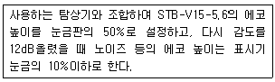

초음파비파괴검사기능사 (2013-04-14 기출문제)
1과목: 초음파탐상시험법
1. 비파괴검사의 적용에 대한 설명 중 옳은 것은?
- 담금질 경화층의 깊이나 막두께 측정에는 와전류탐상 시험을 이용한다.
- 알루미늄 합금의 재질이나 열처리 상태를 판별하기 위해서는 누설검사가 유용하다.
- 구조상 분해할 수 없는 전기용품 내부의 배선상황을 조사할 때는 침투탐상시험이 유용하다.
- 구조재 재질의 적합 여부 및 규정된 내부 결함의 가ㆍ부를 판정하기 위해서는 주로 육안검사를 이용한다.
(정답률: 73%)

2. 시험체의 외경 22mm , 내경 18mm, 내삽형 코일의 외경이 16mm일 때 충전율은 얼마인가?
- 53%
- 73%
- 79%
- 89%
(정답률: 52%)
3. X선 필름 대신에 방사선에 의한 형광 작용을 이용하여 투과 상을 형광체에서 가시상으로 바꾸고, 이 상을 카메라로 촬영하는 방법은?
- 직접촬영법
- 간접촬영법
- 입체촬영법
- 원격촬영법
(정답률: 65%)
4. 비파괴검사의 안전관리에 대한 설명 중 옳은 것은?
- 방사선의 사용은 근로기준법에 규정되어 있고 이에 따르면 누구나 취급해도 좋다.
- 방사선투과시험에 사용되는 방사선이 강하지 않은 경우 안전 측면에 특별히 유의할 필요는 없다.
- 초음파탐상시험에 사용되는 초음파가 강력한 경우 유자격자에 의한 안전관리 지도가 의무화되어 있다.
- 침투탐상시험의 세정처리 등에 사용된 폐액은 환경, 보건에 유의하여야 한다.
(정답률: 83%)
5. 누설시험 중 한국산업규격(KS)에 따른 기압시험은 최고 사용 압력의 얼마를 시험압력으로 정하는가?
- 0.8배
- 1.0배
- 1.25배
- 1.5배
(정답률: 60%)
6. 자분탐상시험에서 선형자계를 발생시키는 방법은?
- 축통전법
- 전류관통법
- 극간법
- 프로드법
(정답률: 72%)
7. 공기 중에서 초음파의 주파수가 5MHz 일 때 물속에서의 파장은 몇 mm가 되는가? (단, 물에서의 초음파 음속은1500m/s 이다.)
- 0.1
- 0.3
- 0.5
- 0.7
(정답률: 82%)
8. 침투탐상검사의 건식 현상법에 대한 설명이 틀린 것은?
- 염색침투액과 함께 사용한다.
- 미세한 결함의 검출감도는 떨어진다.
- 시험체를 분말 속에 매몰시켜 적용할 수 있다.
- 시간이 지나도 지시모양이 거의 변하지 않는다.
(정답률: 53%)
9. X선 또는 방사성 동위원소의 에너지를 나타내는 단위는?
- Bq
- RHM
- Sv
- MeV
(정답률: 58%)
10. 시간이 지남에 따라 결함지시의 형상이나 크기가 변화하기 때문에 평가가 어려워지는 검사방법은?
- 속건식 현상제를 사용하는 침투탐상검사
- 비형광 자분을 사용하는 자분탐상검사
- 공업용 필름을 사용하는 방사선투과검사
- 압력변화를 이용하는 누설검사
(정답률: 58%)
11. 와류탐상검사의 탐상장치 중 시험체가 자성체인 경우, 자성의 균일을 도모하여 μ노이즈(micron-noise)에 의한 영향을 작게하기 위하여 사용되는 것은?
- 동기검파기
- 발전기
- 정밀 이송장치
- 자기포화장치
(정답률: 69%)
12. 다음 중 표면에만 형성된 결함을 검출할 수 없는 비파괴검사법은?
- 육안검사
- 와전류탐상검사
- 누설검사
- 자분탐상검사
(정답률: 56%)
13. 시험체 내부에만 존재하는 불연속의 위치와 깊이를 측정 하는데 가장 적합한 비파괴검사법은?
- 방사선투과검사
- 초음파탐상검사
- 자분탐상검사
- 와전류탐상검사
(정답률: 82%)
14. 자분탐상시험에서 전류관통법의 장점이 아닌 것은?
- 외경이 클수록 작은 전류가 필요하다.
- 반자계가 적다.
- 스파크의 우려가 없다.
- 관 등 내경 및 외경 결함 검출에 좋다.
(정답률: 63%)
15. 공진법에서는 주로 어떤 형태의 초음파를 사용하는가?
- 연속파
- 간헐파
- 표면파
- 레일리파
(정답률: 75%)
16. 음파의 진행방향과 입자가 진동하는 방향이 같은 파는?
- 종파
- 횡파
- 판파
- 표면파
(정답률: 71%)
17. 펄스반사식 집적 접촉 초음파탐상법에서 탐촉자를 선정할 때 고려할 사항이 아닌 것은?
- 초음파빔의 방향
- 탐촉자의 주파수
- 시험체의 무게
- 탐촉자의 크기
(정답률: 85%)
18. 물을 접촉매질로 사용하여 알루미늄을 수침탐상할 때 아래 조건에서 종파의 굴절각은 약 얼마인가? (단, V(물) =V(물)=1.4×105cm/sec , V(Al)=6.32×105/sec, 입사각= 5〬 이다.)
- 26˚
- 23˚
- 18˚
- 16˚
(정답률: 54%)
19. 다음 중 정상적인 탐상에서 불연속 부분이 CRT 스크린상에 지시의 형태로 나타나지 않는 경우가 발생하는 탐상법은?
- 수직법
- 표면파법
- 경사각법
- 투과법
(정답률: 46%)
20. 압연한 판재의 라미네이션(Lamination) 검사에 가장 적합한 초음파탐상 시험방법은?
- 수직법
- 판파법
- 경사각법
- 표면파법
(정답률: 63%)
2과목: 초음파탐상관련규격
21. 초음파탐상시험시 에코높이의 조정에 관계되는 조정부는?
- 시간축발생기
- 음극선관(CRT)
- 리젝션(rejection)
- 지연조절기(delay control)
(정답률: 55%)
22. 경사각탐상에서 1회 반사법에서 결함깊이(d)를 옳게 나타낸 식은? (단, d : 결함깊이, t : 검사물의 두께, W : 빔 노정, y :탐촉자 - 결함간 표면거리, θ : 굴절각 이다.)(오류 신고가 접수된 문제입니다. 반드시 정답과 해설을 확인하시기 바랍니다.)
- y ㆍ cos θ
- W ㆍ cos θ
- 2t - W ㆍ cos θ
- 2t - y ㆍ cos θ
(정답률: 53%)
23. 시험장비의 값 3의 dB값이 9.5dB일 때 , 값 1500의 dB 값은?
- 15.5dB
- 63.5dB
- 96.3dB
- 4511.5dB
(정답률: 69%)
24. 초음파탐상시험으로 용접부를 검사할 때 주파수가 높은 것일수록 결함 크기를 측정하는 정확도는 어떻게 되는가?
- 높아진다.
- 낮아진다.
- 변화없이 일정하다.
- 주파수와 결함 크기는 측정과 무관하다.
(정답률: 65%)
25. 다음 중 초음파탐상장치의 기본 구조에 속하는 것은?
- 탐촉자, 동축케이블, 전원부
- 탐촉자, 기록장치, 주유기
- 기록장치, 주유기, 전원부
- 주유기, 전원부, 선별장치
(정답률: 85%)
26. 탐촉자로부터 결함위치에 따라 음향강쇠로 인하여 에코 크기가 달라지는 것을 보상해주는 것은?
- 산란감쇠보정
- 저면반사보정
- 에코강도보정
- 거리진폭보정
(정답률: 48%)
27. 다음 중 초음파탐상시험의 보조회로에 속하는 것은?
- 거리진폭 보정회로
- 전원회로
- 감쇠기
- 음속 조절 회로
(정답률: 63%)
28. 강용접부의 초음파탐상 시험방법(KS B 0896)에 따르면 용접부에 용접 후 열처리 지정이 있는 경우, 원칙적인 초음파탐상 시기로 옳은 것은?
- 열처리 전
- 열처리 중
- 열처리 후
- 열처리 전, 후로 아무 때나
(정답률: 72%)
29. 철근콘크리트용 이형봉강 가스압접부의 초음파탐상 시험방법 및 판정기준(KS B 0839)에 따라 범용탐상기를 사용할 경우 압접부의 부풀은 곳의 양측에 대한 탐상시험에서 에코높이가 몇 %이상 검출되지 않는 경우를 합격으로 하는가?
- 20
- 40
- 50
- 80
(정답률: 35%)
30. 초음파 탐촉자의 성능 측정 방법(KS B 0839)에 규정된 직접 접촉용 1진동자 경사각 탐촉자의 불감대 측정에 STB-A2 시험편을 사용한 경우의 설명으로 옳은 것은?
- 시험편의 Φ1,5 x 4mm 를 탐상한 에코높이를 100%에 조정한 후 측정한다.
- 시험편의 Φ4 x 4mm 를 탐상한 에코높이를 100%에 조정한 후 측정한다.
- 시험편의 Φ1,5 x 4mm 인 구멍2개를 탐상한 에코 높이를 20%에 조정하고, 다시 14dB감도를 높여 송신펄스의 파형이 마지막으로 80%되는 점을 시간축상에 읽어 측정한다.
- 시험편의 Φ4 x 4mm를 탐상한 에코높이를 20%가 되게 감도를 조정하고, 다시 14BdB 감도를 높여 송신펄스의 파형이 마지막으로 20% 되는 점을 시간축상에 읽어 측정한다.
(정답률: 54%)
31. 강용접부의 초음파탐상 시험방법(KS B 0896)에서 수직탐촉자가 갖추어야 할 성능테스트 방법이다. 틀린 것은?

- STB V5-5.6
- 눈금판의 50%
- 감도를 12dB
- 표시기 눈금의 10%
(정답률: 47%)
32. 금속재료의 펄스반사법에 따른 초음파탐상 시험방법 통칙(KS B 0817)에 의거 초음파탐상기를 조정하는 내용 설명으로 틀린 것은?
- 탐상감도를 설정시 시험편방식, 바닥면에코방식, 기타 적합한 방식으로 선정한다.
- 탐상기의 조정시험을 할 때 원칙적으로 리젝션을 사용하여야 한다.
- 수직법에서의 측정범위는 표시기에 표시해야 할 바닥면 다중에코의 횟수를 고려하여 정한다.
- 펄스 반복주파수는 빠른 주사속도에서는 결함을 빠뜨리지 않도록 높게 하는 것을 고려한다.
(정답률: 73%)
33. 알루미늄의 맞대기용접부의 초음파경사각탐상 시험방법(KS B 0897)에 따른 1탐촉자 경사각탐상으로 흠 (결함)의 지시 길이를 측정하는 내용 중 틀린 것은?
- A종 흠의 경우 최대 에코 높이의 10dB 낮은 레벨선을 넘는 탐촉자 이동거리
- B종 흠의 경우 평가레벨을 넘는 탐촉자 이동거리
- C종 흠의 경우 평가레벨을 넘는 탐촉자 이동거리
- D종 흠의 경우 최대 에코 높이의 10dB 낮은 레벨선을 넘는 탐촉자 이동거리
(정답률: 60%)
34. 강용접부의 초음파탐상 시험방법(KS B 0896)에 의한 수직탐상시 탐상감도의 조정에 대한 설명으로 옳은 것은?
- RB-4의 표준구멍의 에코높이가 H선에 일치하도록 게인을 조정
- RB-4의 표준구멍의 에코높이가 M선에 일치하도록 게인을 조정
- RB-4의 표준구멍의 에코높이가 L선에 일치하도록 게인을 조정
- RB-4의 표준구멍의 에코높이가 II영역에 일치하도록 게인을 조정
(정답률: 42%)
35. 강용접부의 초음파탐상 시험방법(KS B 0896)에 규정 된 경사각탐촉자의 공칭주파수가 2MHz와 5MHz일 때 사용되는 진동자의 공칭치수(mm)로 틀린 것은?
- 2MHz : 20x20
- 5MHz : 25x25
- 2MHz : 14x14
- 5MHz : 10x10
(정답률: 51%)
36. 강용접부의 초음파탐상 시험방법(KS B 0896)에 의한 탠덤 탐상의 적용 판 두께는?
- 10mm이상
- 20mm 이상
- 30mm 이상
- 40mm 이상
(정답률: 56%)
37. 초음파탐상 시험용 표준시험편 (KS B 0831)에서 STB-N1시험편 반사원의 에코높이의 측정값은 검정용 표준시험편에서 정한 기준값에 대하여 몇 dB 이내이어야 합격 인가?
- ±1
- ±2
- ±3
- ±5
(정답률: 59%)
38. 알루미늄 맞대기용접부의 초음파경사각탐상 시험방법 (KS B 0897)에 따라 모재의 두께가 18mm이고, A종으로 구분될 때 흠의 지시 길이가 4mm이면, 흠의 분류는?
- 1류
- 2류
- 3류
- 4류
(정답률: 31%)
39. 건축용 강판 및 평강의 초음파탐상시험에 따른 등급분류와 판정기준 (KS D 0040)에서 수동탐상기를 사용하고 시험주파수를 5MHz로 선택했을 때 요구되는 탐상기의 원거리 분해능과 불감대는?
- 7mm이하, 15mm이하
- 7mm이하, 10mm이하
- 9mm이하, 10mm이하
- 9mm이하, 15mm이하
(정답률: 48%)
40. 강용정부의 초음파탐상 시험방법(KS B 0896)에서 경사각탐촉자의 성능점검 항목이 아닌 것은?
- A1감도
- 원거리 분해능
- 근거리 분해능
- 빔 중심축의 치우침
(정답률: 29%)
3과목: 금속재료일반 및 용접일반
41. 건축용 강판 및 평강의 초음파탐상시험에 따른 등급 분류와 판정기준(KS D 0040)에서 불합격된 강판의 용접보수를 할 때, 최대로 허용할 수 있는 내부결함 제거 부분의 깊이는?
- 공칭 판 두께의 20% 이내
- 공칭 판 두께의 25% 이내
- 공칭 판 두께의 30% 이내
- 공칭 판 두께의 35% 이내
(정답률: 65%)
42. 강용접부의 초음파탐상 시험방법(KS B 0896)에 의해 탠덤 탐상할 때 에코높이 구분선인 M선의 기준 에코높이는?
- 20%
- 40%
- 50%
- 80%
(정답률: 63%)
43. Cu-Zn계 합금인 황동에서 탈아연부식이 가장 발생하기 쉬우며, α+β의 조직인 것은?
- 톰백(tombac)
- 문쯔메탈(muntz metal)
- 애드미럴티황동(admiralty brass)
- 쾌삭황동(free cutting brass)
(정답률: 55%)
44. 순수한 철(Fe)의 동소 변태점 끼리 구성된 것은?
- A0, A1
- A1, A2
- A2, A3
- A3, A4
(정답률: 60%)
45. 주철의 접종에서 S% 의 고저(高低)에 관계없이 효과가 있는 접종제는?
- K-Mn
- Cd-Na
- Ca-Si
- Zn-Co
(정답률: 68%)
46. 실용 합금으로 AI 에 Si이 약 10~13% 함유된 합금의 명칭으로 옳은 것은?
- 라우탈
- 알니코
- 살루민
- 오일라이트
(정답률: 80%)
47. α철 (BCC)보다 γ철(FCC)에 탄소의 고용도가 훨씬 큰 이유는?
- γ철의 원자충진율이 더 낮다.
- γ철에서는 탄소가 치환형으로 고용된다.
- γ철에서는 탄화물을 잘 형성한다.
- γ철에는 탄소가 고용할 만한 크기의 공간이 있다.
(정답률: 42%)
48. 소성 히스테리시스와 관련이 가장 깊은 것은?
- 멘델의 법칙
- 베가드의 법칙
- 키켄델의 법칙
- 바우싱거 효과
(정답률: 60%)
49. 표점 거리가 200mm인 1호 시험편으로 인장 시험한 후 표점 거리가 240mm로 되었다면 연신율은?
- 10%
- 20%
- 30%
- 40%
(정답률: 70%)
50. Fe-c상태도에서 0.8%c 함유하며 온도 723℃에서 γ⥃ α+Fe3C로 반응하는 것은?
- 공정 반응
- 공석 반응
- 편정 반응
- 포정반응
(정답률: 65%)
51. 다음의 가공용 알루미늄 합금 중 시효경화성이 있는 것은?
- 알민
- 두랄루민
- 알클래드
- 하이드로날륨
(정답률: 63%)
52. 변태 초소성의 조건과 원칙에 대한 설명 중 틀린 것은?
- 재료에 변태가 있어야 한다.
- 변태 진행 중에 작은 하중에도 변태 초소성이 된다.
- 감도지수(m)의 값은 거의 0 (zero)의 값을 갖는다.
- 변태점을 오르내리는 열사이클을 반복으로 가한다.
(정답률: 54%)
53. 주철의 기계적 성질에 대한 설명 중 틀린 것은?
- 경도는 C+Si 의 함유량이 많을수록 높아진다.
- 주철의 압축강도는 인장강도의 3~4배 정도이다.
- 고 C, 고 Si의 크고 거친 흑연편을 함유하는 주철은 충격값이 작다.
- 주철은 자체의 흑연이 윤활제 역할을 하며, 내마멸성이 우수하다.
(정답률: 55%)
54. 다음 금속 중 이온화 경향이 가장 큰 것은?
- Mo
- Fe
- Al
- Cu
(정답률: 50%)
55. 다음 중 베어링용 합금이 갖추어야 할 조건 중 틀린 것은?
- 마찰계수가 클 것
- 충분한 점성과 인성이 있을 것
- 내식성 및 소착성이 좋을 것
- 하중에 견딜 수 있는 경도와 내압력을 가질 것
(정답률: 75%)
56. 전기구리를 용융정제하여 구리 중의 산소를 0.02~0.04%정도 남긴 구리를 무엇이라 하는가?
- 정련구리
- 탈탄구리
- 합금구리
- 경화구리
(정답률: 48%)
57. 저용융점 합금의 용융점 온도는 약 몇 ℃ 이하인가?
- 250℃
- 350℃
- 450℃
- 550℃
(정답률: 74%)
58. 다음 중 테르밋 용접(Thermit welding)을 설명한 것은?
- 원자수소의 발열을 이용한 용접이다.
- 액체 산소를 이용한 가스 용접의 일종이다.
- 산화철과 알루미늄의 반응열을 이용한 용접이다.
- 탄산나트륨과 염화칼륨의 반응열을 이용한 용접이다.
(정답률: 53%)
59. 가스용접 시 역류 방지법으로 틀린 것은?
- 산소를 차단한다.
- 아세틸렌을 열어둔다.
- 팁을 깨끗이 청소한다.
- 안전기와 발생기를 차단시킨다.
(정답률: 63%)
60. AW300인 교류 아크 용접기로 아크 시간이 4분, 휴식시간이 6분이면 이 용접기의 사용률은 얼마인가?
- 20[%]
- 30[%]
- 40[%]
- 50[%]
(정답률: 74%)